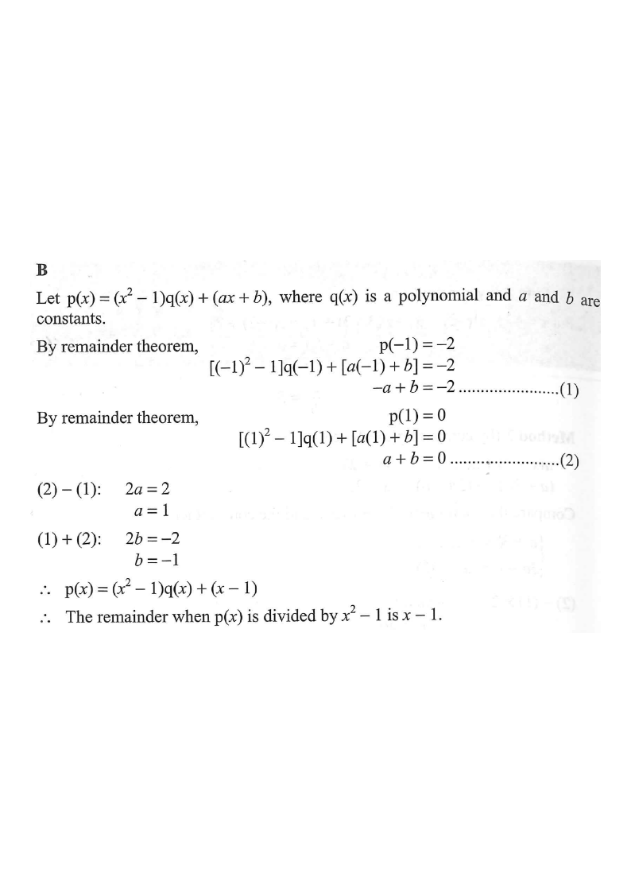

Step 1 — Remainder Theorem setup: write p(x) = (x²−1)·q(x) + (ax + b).
Let $P(x)$ be a polynomial. When $P(x)$ is divided by $x+1$, the remainder is $-2$. If $P(x)$ is divisible by $x-1$, find the remainder when $P(x)$ is divided by $x^{2}-1$.

Since $x^{2}-1=(x-1)(x+1)$ is a quadratic, the remainder when $P(x)$ is divided by $x^{2}-1$ must be of the form $ax+b$ (degree < 2).
So we may write $$P(x)=(x^{2}-1)\,q(x)+(ax+b),$$ where $q(x)$ is a polynomial and $a,b$ are constants.
Hint: the "remainder" after dividing by a quadratic is linear, $ax+b$.
Dividing by $x+1$ gives remainder $-2$, so $P(-1)=-2$.
Substitute $x=-1$ into the identity: $$P(-1)=((-1)^{2}-1)q(-1)+\bigl(a(-1)+b\bigr)=-2$$ $$0\cdot q(-1)-a+b=-2$$ $$\Rightarrow\ -a+b=-2 \qquad\dots(1)$$
Hint: the term $(x^{2}-1)q(x)$ vanishes at $x=\pm1$ — this is exactly what makes $a,b$ easy to find.
$P(x)$ is divisible by $x-1$, so $P(1)=0$.
Substitute $x=1$: $$P(1)=((1)^{2}-1)q(1)+\bigl(a(1)+b\bigr)=0$$ $$0\cdot q(1)+a+b=0$$ $$\Rightarrow\ a+b=0 \qquad\dots(2)$$
Hint: "divisible by $x-1$" means the remainder at $x=1$ is $0$.
From $(2)-(1)$: $\ 2a=2\ \Rightarrow\ a=1$.
From $(1)+(2)$: $\ 2b=-2\ \Rightarrow\ b=-1$.
Therefore $$P(x)=(x^{2}-1)\,q(x)+(x-1).$$
Hint: add/subtract the two linear equations — the $b$'s and $a$'s cancel neatly.
The remainder when $P(x)$ is divided by $x^{2}-1$ is the linear part $$\boxed{\,x-1\,}$$
Hint: check: $P(-1)=-1-1=-2$ ✓ and $P(1)=1-1=0$ ✓.
Question. Let \(P(x)\) be a polynomial. When \(P(x)\) is divided by \(x-2\), the remainder is \(7\). If \(P(x)\) is divided by \(x+1\), the remainder is \(1\). Find the remainder when \(P(x)\) is divided by \(x^{2}-x-2\).
A. \(2x+3\) B. \(2x-3\) C. \(3x+1\) D. \(x+5\) (1 mark)